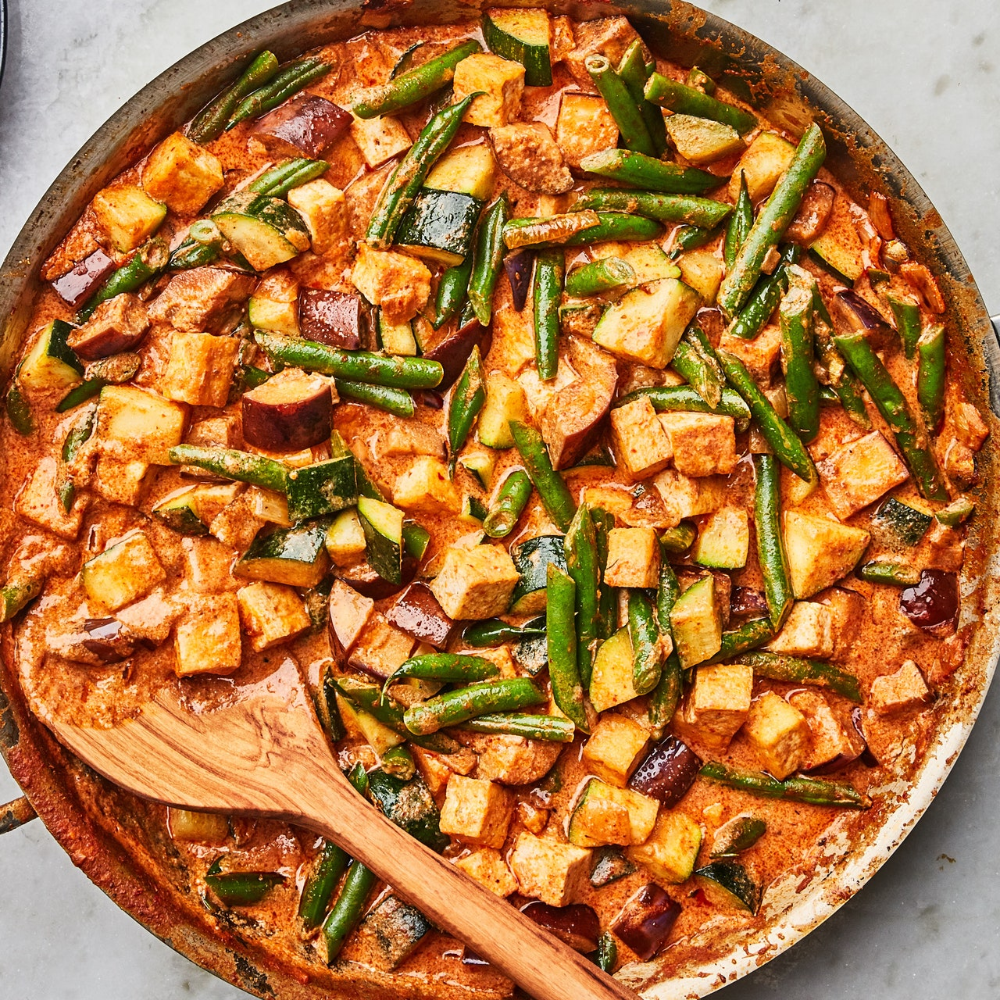

Tofu & Summer Vegetable Curry

Description
Vegetarian!
Ingredients
- 4 tbs virgin coconut oil or extra-virgin olive oil, divided
- 1 14 oz package firm or extra-firm tofu, patted dry, cut into 1/2" cubes
- Kosher salt
- 2 medium onions, coarsely chopped
- 3 large zucchini, cut into 1/2" pieces
- 8 oz green beans, trimmed, cut into 1" pieces
- 1 13.5 oz can unsweetened coconut milk
- Lime wedges, cilantro leaves with tender stems, and coarsely chopped salted, roasted peanuts (for serving)
- 2 cups cooked rice
Steps
- Heat 2 Tbsp. oil in a large skillet, preferably nonstick, over medium-high. Add tofu in a single layer and cook, turning over once, until cooked sides are golden brown, about 4 minutes. Transfer to paper towels to drain. Season with kosher salt.
- Heat remaining 2 Tbsp. oil in a large pot or high-sided skillet over medium-high. Add onions and a generous pinch of salt and stir to coat. Cook, stirring often, until softened, about 4 minutes. Stir in curry paste and cook, stirring often, until darkened in color, about 2 minutes. Add zucchini, eggplant, and green beans and cook, tossing to coat, until vegetables are softened and starting to brown in spots, 5-7 minutes. Pour in coconut milk and ½ cup water and bring to a simmer.
- Add tofu to pot and stir gently to combine. Cook until warmed through, about 3 minutes. Season with more salt if needed.
- Divide curry among bowls and add a generous squeeze of lime juice to each. Top with cilantro and peanuts.